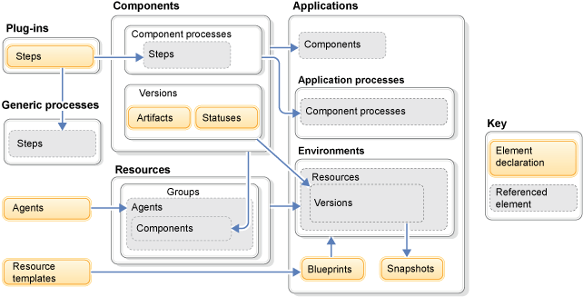

Elements overview
The HCL® UrbanCode™ Deploy elements that you use to model software deployments include applications, environments, and components.
This graphic shows the relationships between different elements on the server, such as applications, environments, and components. Each element is described in the following text.

Components
Software components are central to HCL UrbanCode Deploy. Components represent deployable items, also called artifacts, which can be files, images, databases, configuration materials, or anything else that is associated with a software project. Each time that you import new files that are associated with a component, a new component version is created. The server keeps copies of these component version artifacts, and you specify which component version to use each time you deploy. You can also apply statuses, such as Selenium tests passed to component versions and use the statuses in processes to control deployment behavior.
You create component processes, processes that usually contain all the steps that are necessary for the server to deploy the component to an environment. These steps describe all actions, such as starting a Tomcat server or updating files in a database. Many process steps are available by default, and you can obtain more steps from plug-ins.
Plug-ins
Automation plug-ins are the most common type of plug-in, and they provide more steps for component processes. For information about specific plug-ins, see IBM® developerWorks®: UrbanCode Deploy Plug-ins.
Resources
Resources are represented in a tree throughout HCL UrbanCode Deploy to represent the relationships between components, the agents that deploy the components, and the target deployment environments. You create groups to represent target servers and environments, attach the agents that deploy to the environments, and attach components to the agents that run their processes.
The most common resource is an agent, a software program that facilitates communication between the component's host and the server. The agent runs the processes that deploy components.
To replicate a section of the resource tree, create a resource template. Resource templates describe a small section of the resource tree and can be applied to environments through a blueprint.
Applications
An application is a logical group of components that are deployed together. Applications have processes, but their steps usually start processes or modify resources. An application contains environments, which describe all the deployment locations that are needed in your deployment process, and you run application processes to deploy components to environments.
HCL UrbanCode Deploy provides you with tools to ensure consistent deployments, like snapshots, and simplify the creation of environments, like blueprints. Snapshots record the component versions that are deployed to an environment, and you can use a snapshot to select the component versions that are applied during a deployment. Blueprints are plans for application environments; they apply resource templates to new environments.
Generic processes
You create a generic process to run any automated task that is not tied to a specific component or application. You can use any process step that is available for component processes when you create generic processes. You can create generic processes to set up new target servers or to perform audit tasks.
Parent topic: Overview of HCL UrbanCode Deploy